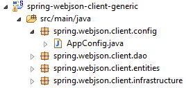
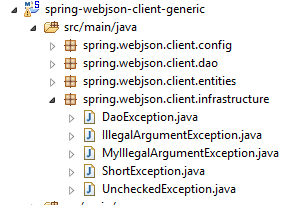
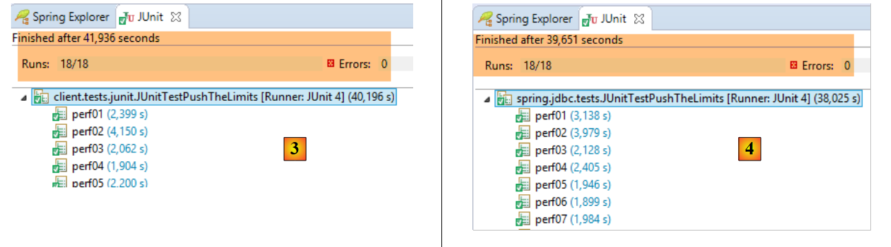
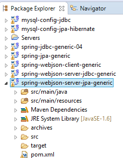
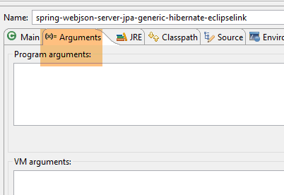
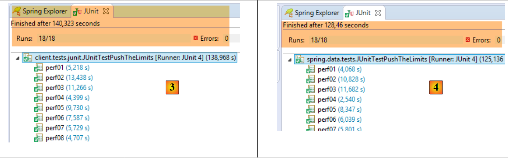

18. Um cliente programado para o serviço web /jSON
Agora que a base de dados [dbproduitscategories] está disponível na Web, vamos escrever uma aplicação que a utilize. Teremos então a seguinte arquitetura cliente/servidor:
 |
A aplicação cliente terá três camadas:
- uma camada [Cliente HTTP] [3] para comunicar com a aplicação web /jSON que expõe a base de dados;
- uma camada [DAO] [2] que apresentará a mesma interface que a camada [DAO] [4];
- uma camada de testes JUnit [1] para verificar se o cliente e o servidor estão a funcionar corretamente;
18.1. O projeto Eclipse
O projeto Eclipse do cliente é o seguinte:
 |
 |  |  |
 |  |
- O pacote [spring.webjson.client.config] contém a configuração Spring para a camada [DAO];
- o pacote [spring.webjson.client.dao] contém a implementação da camada [DAO];
- o pacote [spring.webjson.client.entities] contém os objetos trocados com o serviço web / JSON. Estamos familiarizados com todos eles;
- o pacote [spring.webjson.client.infrastructure] contém as classes de exceção utilizadas pelo projeto. Conhecemo-las todas;
18.2. Configuração Maven do projeto
O projeto é um projeto Maven configurado pelo seguinte ficheiro [pom.xml]:
<project xmlns="http://maven.apache.org/POM/4.0.0" xmlns:xsi="http://www.w3.org/2001/XMLSchema-instance"
xsi:schemaLocation="http://maven.apache.org/POM/4.0.0 http://maven.apache.org/xsd/maven-4.0.0.xsd">
<modelVersion>4.0.0</modelVersion>
<groupId>dvp.spring.database</groupId>
<artifactId>spring-webjson-client-generic</artifactId>
<version>0.0.1-SNAPSHOT</version>
<description>Client console du serveur web / jSON</description>
<name>spring-webjson-client-generic</name>
<properties>
<project.build.sourceEncoding>UTF-8</project.build.sourceEncoding>
<java.version>1.7</java.version>
</properties>
<parent>
<groupId>org.springframework.boot</groupId>
<artifactId>spring-boot-starter-parent</artifactId>
<version>1.2.3.RELEASE</version>
</parent>
<dependencies>
<!-- Spring -->
<dependency>
<groupId>org.springframework</groupId>
<artifactId>spring-web</artifactId>
</dependency>
<!-- jSON library used by Spring -->
<dependency>
<groupId>com.fasterxml.jackson.core</groupId>
<artifactId>jackson-core</artifactId>
</dependency>
<dependency>
<groupId>com.fasterxml.jackson.core</groupId>
<artifactId>jackson-databind</artifactId>
</dependency>
<!-- component used by Spring RestTemplate -->
<dependency>
<groupId>org.apache.httpcomponents</groupId>
<artifactId>httpclient</artifactId>
</dependency>
<!-- Google Guava -->
<dependency>
<groupId>com.google.guava</groupId>
<artifactId>guava</artifactId>
<version>16.0.1</version>
</dependency>
<!-- log library -->
<dependency>
<groupId>org.springframework.boot</groupId>
<artifactId>spring-boot-starter-logging</artifactId>
</dependency>
<!-- Spring Boot Test -->
<dependency>
<groupId>org.springframework.boot</groupId>
<artifactId>spring-boot-starter-test</artifactId>
<scope>test</scope>
</dependency>
<!-- Spring Boot -->
<dependency>
<groupId>org.springframework.boot</groupId>
<artifactId>spring-boot</artifactId>
<scope>test</scope>
</dependency>
</dependencies>
<!-- plugins -->
<build>
<plugins>
<plugin>
<groupId>org.apache.maven.plugins</groupId>
<artifactId>maven-surefire-plugin</artifactId>
<version>2.18.1</version>
</plugin>
</plugins>
</build>
</project>
- linhas 16–20: o projeto Maven pai [spring-boot-starter-parent], que nos permite definir várias dependências sem especificar as suas versões, uma vez que estas estão definidas no projeto pai;
- linhas 24–27: embora não estejamos a escrever uma aplicação web, precisamos da dependência [spring-web], que inclui a classe [RestTemplate] que permite uma fácil interação com uma aplicação web ou JSON;
- linhas 29–36: uma biblioteca JSON;
- linhas 38–41: uma dependência que nos permitirá definir um tempo limite para os pedidos HTTP do cliente. Um tempo limite é o tempo máximo de espera por uma resposta do servidor. Após esse tempo, o cliente sinaliza um erro de tempo limite lançando uma exceção;
- linhas 43–48: a biblioteca Google Guava;
- linhas 50–53: a biblioteca de registo;
- linhas 54–64: a dependência para testes JUnit. Inclui a biblioteca JUnit 4 necessária para os testes. Estas dependências têm o atributo [<scope>test</scope>], indicando que são necessárias apenas para a fase de testes. Não são incluídas no arquivo final do projeto;
18.3. Configuração do Spring
A classe [AppConfig] gere a configuração Spring para o cliente HTTP. O seu código é o seguinte:
package spring.webjson.client.config;
import java.util.ArrayList;
import java.util.List;
import org.springframework.beans.factory.config.ConfigurableBeanFactory;
import org.springframework.context.annotation.Bean;
import org.springframework.context.annotation.ComponentScan;
import org.springframework.context.annotation.Configuration;
import org.springframework.context.annotation.Scope;
import org.springframework.http.client.HttpComponentsClientHttpRequestFactory;
import org.springframework.http.converter.HttpMessageConverter;
import org.springframework.http.converter.json.MappingJackson2HttpMessageConverter;
import org.springframework.web.client.RestTemplate;
import com.fasterxml.jackson.databind.ObjectMapper;
import com.fasterxml.jackson.databind.ser.impl.SimpleBeanPropertyFilter;
import com.fasterxml.jackson.databind.ser.impl.SimpleFilterProvider;
@Configuration
@ComponentScan({ "spring.webjson.client.dao" })
public class AppConfig {
// constants
static private final int TIMEOUT = 1000;
static private final String URL_WEBJSON = "http://localhost:8081";
// filters jSON
@Bean
public ObjectMapper jsonMapper(RestTemplate restTemplate) {
return ((MappingJackson2HttpMessageConverter) (restTemplate.getMessageConverters().get(0))).getObjectMapper();
}
@Bean
@Scope(value = ConfigurableBeanFactory.SCOPE_PROTOTYPE)
ObjectMapper jsonMapperShortCategorie(RestTemplate restTemplate) {
ObjectMapper jsonMapper = jsonMapper(restTemplate);
jsonMapper.setFilters(new SimpleFilterProvider().addFilter("jsonFilterCategorie",
SimpleBeanPropertyFilter.serializeAllExcept("produits")));
return jsonMapper;
}
@Bean
@Scope(value = ConfigurableBeanFactory.SCOPE_PROTOTYPE)
ObjectMapper jsonMapperLongCategorie(RestTemplate restTemplate) {
ObjectMapper jsonMapper = jsonMapper(restTemplate);
jsonMapper.setFilters(new SimpleFilterProvider().addFilter("jsonFilterCategorie",
SimpleBeanPropertyFilter.serializeAllExcept()).addFilter("jsonFilterProduit",
SimpleBeanPropertyFilter.serializeAllExcept("categorie")));
return jsonMapper;
}
@Bean
@Scope(value = ConfigurableBeanFactory.SCOPE_PROTOTYPE)
ObjectMapper jsonMapperShortProduit(RestTemplate restTemplate) {
ObjectMapper jsonMapper = jsonMapper(restTemplate);
jsonMapper.setFilters(new SimpleFilterProvider().addFilter("jsonFilterProduit",
SimpleBeanPropertyFilter.serializeAllExcept("categorie")));
return jsonMapper;
}
@Bean
@Scope(value = ConfigurableBeanFactory.SCOPE_PROTOTYPE)
ObjectMapper jsonMapperLongProduit(RestTemplate restTemplate) {
ObjectMapper jsonMapper = jsonMapper(restTemplate);
jsonMapper.setFilters(new SimpleFilterProvider().addFilter("jsonFilterProduit",
SimpleBeanPropertyFilter.serializeAllExcept()).addFilter("jsonFilterCategorie",
SimpleBeanPropertyFilter.serializeAllExcept("produits")));
return jsonMapper;
}
@Bean
public RestTemplate restTemplate(int timeout) {
// creation of the RestTemplate component
HttpComponentsClientHttpRequestFactory factory = new HttpComponentsClientHttpRequestFactory();
RestTemplate restTemplate = new RestTemplate(factory);
// converter jSON
List<HttpMessageConverter<?>> messageConverters = new ArrayList<HttpMessageConverter<?>>();
messageConverters.add(new MappingJackson2HttpMessageConverter());
restTemplate.setMessageConverters(messageConverters);
// exchange timeout
factory.setConnectTimeout(timeout);
factory.setReadTimeout(timeout);
// result
return restTemplate;
}
@Bean
public int timeout() {
return TIMEOUT;
}
@Bean
public String urlWebJson() {
return URL_WEBJSON;
}
}
- linha 20: a classe é uma classe de configuração Spring;
- linha 21: outros componentes Spring podem ser encontrados no pacote [spring.webjson.client.dao];
- linha 25: é definido um tempo limite de um segundo (1000 ms);
- linhas 88–91: o bean que devolve este valor;
- linha 26: a URL do serviço web / JSON;
- linhas 93–96: o bean que retorna este valor;
- linhas 72–86: a configuração da classe [RestTemplate] que lida com a comunicação com o serviço web/JSON. Quando não é necessária nenhuma configuração, pode ser instanciada no código com um simples [new RestTemplate()]. Aqui, queremos definir o tempo de espera para a comunicação com o serviço web/JSON. O bean [timeout] na linha 89 é passado como parâmetro para o método [restTemplate] na linha 73;
- linha 75: o componente [HttpComponentsClientHttpRequestFactory] é aquele que nos permite definir o tempo limite para as comunicações (linhas 82–83);
- linha 76: a classe [RestTemplate] é construída utilizando este componente. Uma vez que depende deste componente para comunicar com o serviço web / JSON, as trocas estarão, de facto, sujeitas ao tempo limite;
- linhas 78–80: associamos um conversor JSON à classe [RestTemplate]. Já discutimos isto ao estudar o serviço web. O cliente e o servidor trocam linhas de texto. Um conversor serializa um objeto em texto e deserializa o texto de volta num objeto. Pode haver vários conversores associados à classe [RestTemplate], e o escolhido em qualquer momento depende dos cabeçalhos HTTP enviados pelo servidor. Aqui, temos apenas um conversor JSON, uma vez que as linhas de texto trocadas são JSON;
- linhas 82–83: os tempos de espera da troca são definidos;
- linhas 28–70: definem os filtros JSON. Estes são os mesmos que os do servidor apresentados na secção 17.3.2.1;
- linhas 29–32: o bean [jsonMapper] é o mapeador JSON para o [MappingJackson2HttpMessageConverter] que associamos à classe [RestTemplate]. Precisamos disto na definição dos filtros JSON;
- linhas 34–41: um bean que define o filtro JSON [categoria sem os seus produtos]. O método [jsonMapperShortCategory] recebe o bean [RestTemplate] definido na linha 73 como parâmetro;
- linha 37: chamamos o método [jsonMapper] da linha 30 para recuperar o mapeador JSON;
- linhas 38–39: definimos o filtro para devolver uma categoria sem os seus produtos;
- linha 40: o mapeador JSON é devolvido conforme configurado;
- linhas 42–51: o filtro JSON para recuperar uma categoria juntamente com os seus produtos;
- linhas 53–60: o filtro JSON para recuperar um produto sem a sua categoria;
- linhas 62–70: o filtro JSON para recuperar um produto com a sua categoria;
Todos estes beans estarão disponíveis para o código da camada [DAO], bem como para os testes JUnit.
18.4. Implementação do cliente HTTP
 |
Acima está a camada [Cliente HTTP] que comunica com o serviço web que acabámos de construir. Vamos agora analisá-la.
 |
A classe [Client] gere a comunicação com o serviço web / JSON. Ela implementa a seguinte interface [IClient]:
package spring.webjson.client.dao;
import org.springframework.http.HttpMethod;
public interface IClient {
public <T1, T2> T1 getResponse(String url, HttpMethod method, int errStatus, T2 body);
}
A interface tem apenas um método [getResponse]:
- linha 6: o método [getResponse] é um método genérico parametrizado por dois tipos:
- [T1]: é o tipo de resposta esperado do servidor em [Response<T1>], por exemplo [List<Category>],
- [T2]: é o tipo do parâmetro JSON enviado pelas operações POST, por exemplo [List<Product>];
- linha 6: o método [getResponse] retorna um resultado do tipo T1, por exemplo [List<Category>];
- linha 6: os parâmetros de [getResponse] são os seguintes:
- [String url]: a URL a consultar;
- [HttpMethod method]: método HTTP da solicitação, GET ou POST, conforme apropriado,
- [int errStatus]: código de erro a ser utilizado na classe [DaoException], caso ocorra um erro durante a comunicação com o servidor,
- [T2 body]: o valor a enviar caso seja feita uma solicitação POST;
A classe [Client] implementa a interface [IClient] da seguinte forma:
package spring.webjson.client.dao;
import java.net.URI;
import java.util.ArrayList;
import java.util.List;
import org.springframework.beans.factory.annotation.Autowired;
import org.springframework.core.ParameterizedTypeReference;
import org.springframework.http.HttpMethod;
import org.springframework.http.MediaType;
import org.springframework.http.RequestEntity;
import org.springframework.http.ResponseEntity;
import org.springframework.stereotype.Component;
import org.springframework.web.client.RestTemplate;
import spring.webjson.client.infrastructure.DaoException;
@Component
public class Client implements IClient {
// injections
@Autowired
protected RestTemplate restTemplate;
@Autowired
protected String urlServiceWebJson;
// local
private String simpleClassName = getClass().getSimpleName();
// generic request
@Override
public <T1, T2> T1 getResponse(String url, HttpMethod method, int errStatus, T2 body) {
...
}
// list of exception error messages
protected List<String> getMessagesForException(Exception exception) {
...
}
}
- linha 18: a classe [Client] é um componente Spring e, portanto, pode ser injetada noutros componentes Spring;
- linhas 22–23: injeção do bean [RestTemplate] definido em [AppConfig] (ver secção 18.3), que gere a comunicação com o servidor;
- linhas 24–25: injeção da URL do serviço web / JSON definida em [AppConfig] (ver secção 18.3);
- Linhas 37–39: O método privado [getMessagesForException] é um método utilitário utilizado para recuperar a lista de mensagens de erro contidas numa exceção. Já o encontrámos várias vezes;
Vamos continuar:
// generic request
@Override
public <T1, T2> T1 getResponse(String url, HttpMethod method, int errStatus, T2 body) {
// the server response
ResponseEntity<Response<T1>> response;
try {
// prepare the query
RequestEntity<?> request = null;
if (method == HttpMethod.GET) {
request = RequestEntity.get(new URI(String.format("%s%s", urlServiceWebJson, url)))
.accept(MediaType.APPLICATION_JSON).build();
}
if (method == HttpMethod.POST) {
request = RequestEntity.post(new URI(String.format("%s%s", urlServiceWebJson, url)))
.header("Content-Type", "application/json").accept(MediaType.APPLICATION_JSON).body(body);
}
// execute the query
response = restTemplate.exchange(request, new ParameterizedTypeReference<Response<T1>>() {
});
} catch (Exception e) {
// encapsulate the exception
throw new DaoException(errStatus, e, simpleClassName);
}
...
}
- linha 18: a instrução que envia o pedido ao servidor e recebe a sua resposta. O componente [RestTemplate] oferece um grande número de métodos para interagir com o servidor, mas apenas o método [exchange] aceita parâmetros genéricos. É por isso que foi escolhido. O segundo parâmetro especifica o tipo da resposta esperada. O primeiro parâmetro é o pedido [RequestEntity] (linha 8). O resultado do método [exchange] é do tipo [ResponseEntity<Response<T1>>] (linha 5). O tipo [ResponseEntity] encapsula a resposta completa do servidor, incluindo cabeçalhos HTTP e o documento enviado pelo servidor. Da mesma forma, o tipo [RequestEntity] encapsula toda a solicitação do cliente, incluindo cabeçalhos HTTP e quaisquer dados enviados;
- linhas 8–16: precisamos de construir a solicitação [RequestEntity]. Esta difere consoante utilizemos uma solicitação GET ou POST;
- linha 10: o pedido de um GET. A classe [RequestEntity] fornece métodos estáticos para criar pedidos GET, POST, HEAD e outros. O método [RequestEntity.get] permite criar um pedido GET encadeando os vários métodos que o constroem:
- o método [RequestEntity.get] recebe o URL de destino como parâmetro na forma de uma instância URI,
- o método [accept] permite definir os elementos do cabeçalho HTTP [Accept]. Aqui, especificamos que aceitamos o tipo [application/json] que o servidor irá enviar;
- o método [build] utiliza esta informação para construir o tipo [RequestEntity] da solicitação;
- Linha 14: a solicitação POST. O método [RequestEntity.post] permite criar uma solicitação POST encadeando os vários métodos que a constroem:
- o método [RequestEntity.post] recebe a URL de destino como parâmetro na forma de uma instância URI,
- o método [header] define um cabeçalho HTTP. Aqui, enviamos o cabeçalho [Content-Type: application/json] ao servidor para indicar que os dados enviados chegarão na forma de uma string JSON;
- o método [accept] permite-nos indicar que aceitamos o tipo [application/json] que o servidor irá enviar;
- o método [body] define o valor enviado. Este é o quarto parâmetro do método genérico [getResponse] (linha 1);
- Linhas 20–23: Se ocorrer um erro de comunicação com o servidor, é lançada uma [DaoException] com o código de erro definido no parâmetro [errStatus] passado como terceiro parâmetro para o método genérico [getResponse] (linha 3);
O método [getResponse] continua da seguinte forma:
// generic request
@Override
public <T1, T2> T1 getResponse(String url, HttpMethod method, int errStatus, T2 body) {
...
// retrieve the body of the reply
Response<T1> entity = response.getBody();
int status = entity.getStatus();
// server-side errors?
if (status != 0) {
// create an exception
throw new DaoException(status, new RuntimeException(entity.getException()), simpleClassName);
} else {
// it's good
return entity.getBody();
}
}
- linha 4: recebemos a resposta do servidor. É do tipo [ResponseEntity<Response<T1>>] (linha 5 do exemplo de código anterior), em que a classe [Response] é a classe já utilizada no lado do servidor:
package spring.webjson.client.dao;
public class Response<T> {
// ----------------- properties
// operation status
private int status;
// the possible exception
private String exception;
// the body of the reply
private T body;
// manufacturers
public Response() {
}
public Response(int status, String exception, T body) {
this.status = status;
this.exception = exception;
this.body = body;
}
// getters and setters
...
}
Voltemos ao método [getResponse]:
- linha 6: recuperamos o objeto [Response<T1>] encapsulado na resposta. Este tipo possui os campos [int status, String exception, T1 body];
- linha 7: recuperamos o [status] da resposta, que é um código de erro;
- linhas 9–12: se houver um erro, lançamos uma exceção contendo as duas informações [status, exception] da resposta do servidor;
- linha 14: caso contrário, devolvemos o tipo [T1] contido na resposta [Response<T1>];
A classe [Client] é genérica. Pode ser utilizada para qualquer cliente web/JSON.
18.5. Implementação da camada [Dao]
 |
 |
18.5.1. A classe [AbstractDao]
A camada [DAO] do lado do cliente tem a mesma interface que a camada [DAO] do lado do servidor (ver secção 4.7):
package spring.webjson.client.dao;
import java.util.List;
import spring.webjson.client.entities.AbstractCoreEntity;
public interface IDao<T extends AbstractCoreEntity> {
// list of all T entities
public List<T> getAllShortEntities();
public List<T> getAllLongEntities();
// special entities - short version
public List<T> getShortEntitiesById(Iterable<Long> ids);
public List<T> getShortEntitiesById(Long... ids);
public List<T> getShortEntitiesByName(Iterable<String> names);
public List<T> getShortEntitiesByName(String... names);
// special entities - long version
public List<T> getLongEntitiesById(Iterable<Long> ids);
public List<T> getLongEntitiesById(Long... ids);
public List<T> getLongEntitiesByName(Iterable<String> names);
public List<T> getLongEntitiesByName(String... names);
// update of several entities
public List<T> saveEntities(Iterable<T> entities);
public List<T> saveEntities(@SuppressWarnings("unchecked") T... entities);
// delete all entities
public void deleteAllEntities();
// deletion of multiple entities
public void deleteEntitiesById(Iterable<Long> ids);
public void deleteEntitiesById(Long... ids);
public void deleteEntitiesByName(Iterable<String> names);
public void deleteEntitiesByName(String... names);
public void deleteEntitiesByEntity(Iterable<T> entities);
public void deleteEntitiesByEntity(@SuppressWarnings("unchecked") T... entities);
}
A classe [AbstractDao] implementa a interface [IDao]. É análoga à classe com o mesmo nome no lado do servidor (ver Secção 4.8). Funciona como classe pai para as classes [DaoCategorie] e [DaoProduit]. Não é idêntica por duas razões:
- no lado do servidor, a classe [AbstractDao] gere uma única informação:
// injections
@Autowired
@Qualifier("maxPreparedStatementParameters")
protected int maxPreparedStatementParameters;
o que não precisamos aqui.
- No lado do servidor, a classe [AbstractDao] utiliza anotações [@Transactional] para encapsular cada método dentro de uma transação. No lado do cliente, não há nenhuma base de dados para gerir. Esta anotação, portanto, desaparece;
A classe [AbstractDao] verifica simplesmente a validade dos parâmetros de chamada para os métodos da interface [IDao] antes de delegar a chamada às classes filhas:
package spring.webjson.client.dao;
import java.util.ArrayList;
import java.util.List;
import spring.webjson.client.entities.AbstractCoreEntity;
import spring.webjson.client.infrastructure.MyIllegalArgumentException;
import com.google.common.collect.Lists;
public abstract class AbstractDao<T1 extends AbstractCoreEntity> implements IDao<T1> {
// local
protected String simpleClassName = getClass().getSimpleName();
@Override
public List<T1> getShortEntitiesById(Iterable<Long> ids) {
// argument validity
List<T1> entities = checkNullOrEmptyArgument(true, ids);
if (entities != null) {
return entities;
}
// result
return getShortEntitiesById(Lists.newArrayList(ids));
}
@Override
public List<T1> getShortEntitiesById(Long... ids) {
// argument validity
List<T1> entities = checkNullOrEmptyArgument(true, ids);
if (entities != null) {
return entities;
}
// result
return getShortEntitiesById(Lists.newArrayList(ids));
}
...
@Override
public void deleteEntitiesByEntity(@SuppressWarnings("unchecked") T1... entities) {
...
}
// méthodes privées ----------------------------------------------
private <T3> List<T1> checkNullOrEmptyArgument(boolean checkEmpty, Iterable<T3> elements) {
// elements null ?
if (elements == null) {
throw new MyIllegalArgumentException(222, new NullPointerException("L'argument ne peut être null"),
simpleClassName);
}
// empty elements?
if (!elements.iterator().hasNext()) {
if (checkEmpty) {
throw new MyIllegalArgumentException(223, new RuntimeException("l'argument ne peut être une liste vide"),simpleClassName);
} else {
return new ArrayList<T1>();
}
}
// default result
return null;
}
@SuppressWarnings("unchecked")
private <T3> List<T1> checkNullOrEmptyArgument(boolean checkEmpty, T3... elements) {
// elements null ?
if (elements == null) {
throw new MyIllegalArgumentException(222, new NullPointerException("L'argument ne peut être null"),simpleClassName);
}
// empty elements?
if (elements.length == 0) {
if (checkEmpty) {
throw new MyIllegalArgumentException(223, new RuntimeException("L'argument ne peut être une liste vide"),
simpleClassName);
} else {
return new ArrayList<T1>();
}
}
// default result
return null;
}
// méthodes protégées ----------------------------------------------
abstract protected List<T1> getShortEntitiesById(List<Long> ids);
abstract protected List<T1> getShortEntitiesByName(List<String> names);
abstract protected List<T1> getLongEntitiesById(List<Long> ids);
abstract protected List<T1> getLongEntitiesByName(List<String> names);
abstract protected List<T1> saveEntities(List<T1> entities);
abstract protected void deleteEntitiesById(List<Long> ids);
abstract protected void deleteEntitiesByName(List<String> names);
}
18.5.2. A classe [DaoCategorie]
 |
A classe [DaoCategorie] é a seguinte:
package spring.webjson.client.dao;
import java.util.List;
import org.springframework.beans.factory.annotation.Autowired;
import org.springframework.context.ApplicationContext;
import org.springframework.http.HttpMethod;
import org.springframework.stereotype.Component;
import spring.webjson.client.entities.Categorie;
import spring.webjson.client.entities.CoreCategorie;
import spring.webjson.client.entities.CoreProduit;
import spring.webjson.client.entities.Produit;
import spring.webjson.client.infrastructure.DaoException;
import com.fasterxml.jackson.core.type.TypeReference;
import com.fasterxml.jackson.databind.ObjectMapper;
@Component
public class DaoCategorie extends AbstractDao<Categorie> {
@Autowired
private ApplicationContext context;
@Autowired
private IClient client;
...
}
- linha 19: a classe [DaoClient] é um componente Spring no qual outros componentes Spring podem ser injetados;
- linha 20: a classe [DaoClient] estende a classe [AbstractDao<Category>] que acabámos de ver e, por isso, implementa a interface [IDao<Category>];
- linhas 22–23: injetamos o contexto Spring para aceder aos seus beans;
- linhas 24–25: injetamos o cliente HTTP que acabámos de criar;
As implementações dos vários métodos da interface [DaoCategorie] seguem todas o mesmo padrão. Apresentaremos três métodos, um baseado numa operação [GET] e os outros dois numa operação [POST].
18.5.2.1. O método [getAllLongEntities]
O método [getAllLongEntities] devolve a versão longa de todas as categorias na base de dados:
@Override
public List<Categorie> getAllLongEntities() {
try {
// filters jSON
ObjectMapper mapper = context.getBean("jsonMapperLongCategorie", ObjectMapper.class);
// get all categories
Object map = client.<List<Categorie>, Void> getResponse("/getAllLongCategories", HttpMethod.GET, 232, null);
// the List<Categorie> category list
List<Categorie> categories = mapper.readValue(mapper.writeValueAsString(map),
new TypeReference<List<Categorie>>() {
});
// redo the product --> category link
return linkCategorieWithProduits(categories);
} catch (DaoException e1) {
throw e1;
} catch (Exception e2) {
throw new DaoException(233, e2, simpleClassName);
}
}
- linha 2: o método devolve a lista de categorias nas suas versões completas;
- linha 5: o mapeador JSON que irá serializar o valor enviado (não existe nenhum) e deserializar a resposta devolvida pela classe [Client] (categorias nas suas versões completas);
- linha 7: chamamos o método [getResponse] da classe [Client]. Este método lida com a comunicação com o serviço web / JSON. Os seus parâmetros são os seguintes:
- a URL do serviço que está a ser consultado [/getAllLongCategories];
- o método [GET] a utilizar;
- o código de erro a utilizar caso ocorra um erro (232);
- o valor enviado. Aqui, não há nenhum;
- Linha 7: Na expressão [client.<List<Category>, Void>], especificamos os parâmetros reais dos tipos genéricos [T1, T2] para o método [getResponse]. Recorde-se que [T1] é o tipo da resposta esperada e [T2] é o tipo do valor enviado. Aqui, esperamos um resultado do tipo [List<Category>] e não há valor enviado [Void];
- Linha 7: O resultado devolvido pelo método [getResponse] é armazenado num objeto do tipo [Object]. Isto é um pouco estranho, uma vez que esperamos um tipo [List<Category>]. Isto deve-se ao facto de o método [getResponse], que trabalha com tipos genéricos [T1, T2], devolver sempre um tipo [java.util.LinkedHashMap], que tem de ser posteriormente processado para devolver o tipo correto;
- Linha 9: Devolvemos a lista de categorias. Para tal, serializamos o objeto [map] [mapper.writeValueAsString(map)] numa cadeia de caracteres JSON, que depois deserializamos de volta para um tipo [List<Category>];
- linha 13: recebemos uma lista de categorias, algumas das quais podem ter produtos. Recebemos a versão resumida desses produtos. Portanto, quando são deserializados, os objetos [Product] criados têm o seu campo [category] definido como nulo. O método [linkCategoryWithProducts] restabelece a ligação entre um [Product] e a sua [Category];
- linhas 14–15: capturamos a [DaoException] que o método [getResponse] possa ter lançado e relançamo-la imediatamente. Este comportamento invulgar deve-se ao facto de, se não o fizermos, a [DaoException] ser capturada pelas linhas 16–18, e não queremos isso;
- linhas 16–18: capturamos todas as outras exceções para as encapsular num tipo [DaoException]. Recorde-se que a camada [DAO] deve lançar apenas este tipo de exceção;
O método [linkCategorieWithProduits], que restabelece as ligações entre as entidades [Product] e as entidades [Category], é o seguinte:
private List<Categorie> linkCategorieWithProduits(List<Categorie> categories) {
for (Categorie categorie : categories) {
List<Produit> produits = categorie.getProduits();
if (produits != null) {
for (Produit produit : produits) {
produit.setCategorie(categorie);
}
}
}
return categories;
}
18.5.2.2. Gerir filtros JSON
Vamos rever o tratamento dos filtros JSON no método [getAllLongEntities] anterior:
@Override
public List<Categorie> getAllLongEntities() {
try {
// filters jSON
ObjectMapper mapper = context.getBean("jsonMapperLongCategorie", ObjectMapper.class);
// get all categories
Object map = client.<List<Categorie>, Void> getResponse("/getAllLongCategories", HttpMethod.GET, 232, null);
// the List<Categorie> category list
List<Categorie> categories = mapper.readValue(mapper.writeValueAsString(map),
new TypeReference<List<Categorie>>() {
});
- Linha 5: Recuperamos um mapeador JSON do contexto Spring que consegue lidar com as versões longas das categorias. Vamos rever a definição deste mapeador na configuração Spring [AppConfig]:
// filters jSON
@Bean
public ObjectMapper jsonMapper(RestTemplate restTemplate) {
return ((MappingJackson2HttpMessageConverter) (restTemplate.getMessageConverters().get(0))).getObjectMapper();
}
@Bean
@Scope(value = ConfigurableBeanFactory.SCOPE_PROTOTYPE)
ObjectMapper jsonMapperLongCategorie(RestTemplate restTemplate) {
ObjectMapper jsonMapper = jsonMapper(restTemplate);
jsonMapper.setFilters(new SimpleFilterProvider().addFilter("jsonFilterCategorie",
SimpleBeanPropertyFilter.serializeAllExcept()).addFilter("jsonFilterProduit",
SimpleBeanPropertyFilter.serializeAllExcept("categorie")));
return jsonMapper;
}
@Bean
public RestTemplate restTemplate(int timeout) {
...
}
- O bean [jsonMapperLongCategorie] solicitado pelo método [getAlllongEntities] é o bean nas linhas 7–15;
- linha 10: o mapeador é fornecido pelo método [jsonMapper] nas linhas 2–5. Podemos ver que este mapeador JSON pertence ao objeto [RestTemplate], que gere as trocas HTTP entre o cliente e o servidor. Este mapeador é utilizado por predefinição para:
- serializar o valor enviado ao servidor;
- deserializar a resposta devolvida pelo servidor;
Voltemos ao código do [getAllLongEntities]:
// filters jSON
ObjectMapper mapper = context.getBean("jsonMapperLongCategorie", ObjectMapper.class);
// get all categories
Object map = client.<List<Categorie>, Void> getResponse("/getAllLongCategories", HttpMethod.GET, 232, null);
// the List<Categorie> category list
List<Categorie> categories = mapper.readValue(mapper.writeValueAsString(map),
new TypeReference<List<Categorie>>() {
});
// redo the product --> category link
return linkCategorieWithProduits(categories);
- Linha 2: Recuperamos o mapeador [jsonMapperLongCategorie] do contexto Spring;
- linha 4: o método [getResponse] é executado. Isto envolve:
- serialização automática do valor enviado (não há nenhum aqui);
- deserialização automática da resposta recebida, neste caso do tipo List<Category>. Isto deve-se ao facto de a entidade [Category] possuir um filtro JSON [jsonFilterCategory], que precisava de ser tratado. Esta é a razão para a linha 2;
- linha 6: o resultado passa por uma segunda serialização/deserialização com este mesmo mapeador para recuperar o tipo List<Category>. Linha 4: o tipo devolvido por [getResponse] é um tipo [Object];
Nos métodos a seguir, note-se que o mapeador JSON solicitado ao contexto Spring é utilizado tanto para o valor enviado (serialização) como para o valor recebido (desserialização). Se um ou ambos os valores tiverem um filtro JSON, estes devem ser configurados. O mapeador pode, portanto, ter até dois filtros configurados. No que se segue, isso nunca acontece. Ou o valor enviado não tem filtro (List<Long>, List<String>), ou o valor recebido não tem nenhum (List<CoreCategory>, List<CoreProduct>). As entidades com um filtro JSON são apenas [Category] e [Product].
18.5.2.3. O método [getShortEntitiesById]
O método [getShortEntitiesById] devolve as versões curtas das categorias cujas chaves primárias recebe como parâmetros:
@Override
protected List<Categorie> getShortEntitiesById(List<Long> ids) {
try {
// filters jSON
ObjectMapper mapper = context.getBean("jsonMapperShortCategorie", ObjectMapper.class);
// get a category without its products
Object map = client.<List<Categorie>, List<Long>> getResponse("/getShortCategoriesById", HttpMethod.POST, 204, ids);
// the category
return mapper.readValue(mapper.writeValueAsString(map), new TypeReference<List<Categorie>>() {
});
} catch (DaoException e1) {
throw e1;
} catch (Exception e2) {
throw new DaoException(223, e2, simpleClassName);
}
}
- linha 5: o mapeador JSON que irá serializar o valor enviado (uma lista de chaves primárias) e deserializar a resposta devolvida pela classe [Client] (categorias nas suas versões curtas). O filtro escolhido não terá efeito sobre o valor enviado, uma vez que não existe filtro para os elementos da lista enviada;
- linha 7: chamamos o método [getResponse] da classe pai. Este método lida com a comunicação com o serviço web / JSON. Os seus parâmetros são os seguintes:
- a URL do serviço que está a ser consultado [/getShortCategoriesById];
- o método [POST] a utilizar;
- o código de erro a utilizar caso ocorra um erro (204);
- o valor enviado. Aqui, trata-se de uma lista de chaves primárias;
- linha 7: na expressão [client.<List<Category>, List<Long>>], especificamos os parâmetros reais dos tipos genéricos [T1, T2] para o método [getResponse]. Lembre-se de que [T1] é o tipo da resposta esperada e [T2] é o tipo do valor enviado. Aqui, esperamos um resultado do tipo [List<Category>] e o valor enviado é uma lista de chaves primárias do tipo [List<Long>];
- Linha 7: O resultado devolvido pelo método [getResponse] é armazenado num tipo [Object];
- Linha 9: A lista de categorias é devolvida. Para tal, o objeto [map] [mapper.writeValueAsString(map)] é serializado numa cadeia de caracteres JSON, que é depois deserializada num tipo [List<Category>];
18.5.2.4. O método [saveEntities]
O método [saveEntities] persiste as categorias na base de dados. O seu código é o seguinte:
@Override
protected List<Categorie> saveEntities(List<Categorie> entities) {
try {
// filters jSON
ObjectMapper mapper = context.getBean("jsonMapperLongCategorie", ObjectMapper.class);
// add categories
Object map = client.<List<CoreCategorie>, List<Categorie>> getResponse("/saveCategories", HttpMethod.POST, 200,
entities);
// list of added core categories
List<CoreCategorie> coreCategories = mapper.readValue(mapper.writeValueAsString(map),
new TypeReference<List<CoreCategorie>>() {
});
// categories are updated with the information received
for (int i = 0; i < entities.size(); i++) {
Categorie categorie = entities.get(i);
CoreCategorie coreCategorie = coreCategories.get(i);
categorie.setId(coreCategorie.getId());
List<Produit> produits = categorie.getProduits();
if (produits != null) {
List<CoreProduit> coreProduits = coreCategorie.getCoreProduits();
for (int j = 0; j < produits.size(); j++) {
Produit produit = produits.get(j);
produit.setId(coreProduits.get(j).getId());
produit.setIdCategorie(categorie.getId());
produit.setCategorie(categorie);
}
}
}
return entities;
} catch (DaoException e1) {
throw e1;
} catch (Exception e2) {
throw new DaoException(220, e2, simpleClassName);
}
}
- linha 2: o método [saveEntities] é utilizado para persistir as categorias passadas como parâmetros na base de dados. Este método devolve essas mesmas categorias, enriquecidas com as suas chaves primárias. Se as categorias forem passadas juntamente com produtos, estes também são persistidos;
- linha 5: o mapeador JSON que irá serializar o valor enviado (uma lista de categorias nas suas versões longas) e deserializar a resposta devolvida pela classe [Client] (objetos [CoreCategory]). O filtro escolhido não terá efeito no resultado, uma vez que os elementos da lista recebida como resposta não são filtrados;
- linha 7: chamamos o método [getResponse] do pai para lidar com a comunicação com o serviço web / JSON;
- o primeiro parâmetro é a URL [/saveCategories];
- o segundo parâmetro é o método HTTP a utilizar, neste caso um [POST];
- o terceiro parâmetro é o código de erro a utilizar caso ocorra um erro (200);
- o último parâmetro é o valor enviado, aqui a lista de categorias a persistir;
- linha 7: os parâmetros genéricos [T1, T2] do método [getResponse] são aqui [List<CoreCategory>, List<Category>]. O primeiro tipo é o da resposta esperada, o segundo é o tipo do valor enviado;
- linha 7: armazenamos a resposta obtida num tipo [Object];
- linha 9: reconstruímos a resposta do tipo [List<CoreCategory>]. A resposta a ser devolvida é do tipo [List<Category>] (linha 2) e não [List<CoreCategory>]. A resposta recebida é a lista de chaves primárias para as categorias e produtos persistidos;
- linhas 14–28: as chaves primárias recebidas são atribuídas às categorias e aos produtos (linhas 17, 23, 24). Além disso, as relações [Product] → [Category] são reconstruídas (linhas 24–25);
Todos os outros métodos seguem o mesmo padrão.
18.6. O teste JUnit
Voltemos à arquitetura cliente/servidor atualmente em desenvolvimento:
 |
Criámos uma camada [DAO] [2] com a mesma interface que a camada [DAO] [4]. Para testar a camada [DAO] [2], podemos, portanto, utilizar os testes JUnit que foram utilizados para testar a camada [DAO] [4]:
 |
Estes três testes são executados utilizando as seguintes configurações de teste:
 |  |
 |
Os resultados dos três testes são os seguintes:
 |
 |
- em [1], o teste [JUnitTestCheckArguments];
- em [2], o teste [JUnitTestDao];
- em [3], o teste [JUnitTestPushTheLimits] executado no lado do cliente (projeto [spring-webjson-client-generic]);
- em [3], o teste [JUnitTestPushTheLimits] executado no lado do servidor (projeto [spring-jdbc-generic-04]). Observamos que a camada de rede causa muito pouca lentidão em comparação com a causada pelo acesso ao SGBD;
18.7. Implementação de serviço Web / JSON / JPA / Hibernate
Vamos agora examinar a seguinte arquitetura:
 |
A modificação encontra-se em [1]. A camada [DAO] do servidor baseia-se numa implementação JPA. Iremos utilizar, em primeiro lugar, uma implementação JPA / Hibernate.
18.7.1. O projeto Eclipse
Por enquanto, os projetos carregados no Eclipse são os seguintes:
 |
O projeto [spring-webjson-server-jdbc-generic] baseou-se no projeto [spring-jdbc-generic-04], que configura a camada DAO/JDBC para aceder ao SGBD MySQL. Iremos criar um novo projeto [spring-webjson-server-jpa-generic], que se baseará no projeto [spring-jpa-generic], que configura a camada DAO/JPA/JDBC para aceder ao SGBD MySQL. Sabemos que, em ambos os casos, a camada [DAO] implementa a mesma interface [IDao]. O código da camada [web] permanece, portanto, inalterado.
Podemos criar o projeto [spring-webjson-server-jpa-generic] copiando e colando a partir do projeto [spring-webjson-server-jdbc-generic]:
 |
- em [1], especifique uma pasta criada especificamente para o novo projeto;
 |
Há três tipos de alterações a efetuar. As primeiras estão no ficheiro de configuração Maven do projeto [pom.xml]:
<project xmlns="http://maven.apache.org/POM/4.0.0" xmlns:xsi="http://www.w3.org/2001/XMLSchema-instance"
xsi:schemaLocation="http://maven.apache.org/POM/4.0.0 http://maven.apache.org/xsd/maven-4.0.0.xsd">
<modelVersion>4.0.0</modelVersion>
<groupId>dvp.spring.database</groupId>
<artifactId>spring-webjson-server-jpa-generic</artifactId>
<version>0.0.1-SNAPSHOT</version>
<name>spring-webjson-server-jpa-generic</name>
<description>démo spring mvc</description>
<parent>
<groupId>org.springframework.boot</groupId>
<artifactId>spring-boot-starter-parent</artifactId>
<version>1.2.3.RELEASE</version>
</parent>
<dependencies>
<!-- web layer -->
<dependency>
<groupId>org.springframework.boot</groupId>
<artifactId>spring-boot-starter-web</artifactId>
</dependency>
<!-- layer [DAO] -->
<dependency>
<groupId>dvp.spring.database</groupId>
<artifactId>spring-jpa-generic</artifactId>
<version>0.0.1-SNAPSHOT</version>
</dependency>
</dependencies>
<!-- plugins -->
<build>
<plugins>
<plugin>
<groupId>org.apache.maven.plugins</groupId>
<artifactId>maven-surefire-plugin</artifactId>
<version>2.18.1</version>
</plugin>
</plugins>
</build>
</project>
- linha 5: altere o nome do artefacto Maven;
- linhas 24–28: a dependência está agora no projeto [spring-jpa-generic] e já não no [spring-jdbc-generic-04];
No final, as dependências ficam assim:
 |
Depois de fazer isto, resolvemos todos os problemas de importação que surgiram nas várias classes. Por exemplo, as entidades [Product, Category] já não se encontram no projeto [spring-jdbc-generic-04], mas sim no projeto [spring-jpa-generic]. Basta premir [Ctrl-Shift-O] no código de uma classe para regenerar as importações.
A alteração final deve ser feita no ficheiro de configuração [AppConfig]:
package spring.webjson.server.config;
import org.springframework.context.annotation.ComponentScan;
import org.springframework.context.annotation.Configuration;
import org.springframework.context.annotation.Import;
@Configuration
@ComponentScan(basePackages = { "spring.webjson.server.service" })
@Import({ spring.data.config.AppConfig.class, WebConfig.class })
public class AppConfig {
}
- Linha 9: Agora importamos a configuração do projeto [spring-jpa-generic] em vez do projeto [spring-jdbc-generic-04];
É isso — estamos prontos. Iniciamos o serviço web com a configuração [spring-webjson-server-jpa-generic-hibernate-eclipselink]:
 |  |
Em seguida, executamos os três testes para o cliente genérico [spring-webjson-client-generic]:
 |
 |
- em [1], o teste [JUnitTestCheckArguments] (configuração de execução [spring-webjson-client-generic-JUnitTestCheckArguments]);
- em [2], o teste [JUnitTestDao] (configuração de execução [spring-webjson-client-generic-JUnitTestDao]);
- em [3], o teste [JUnitTestPushTheLimits] executado no lado do cliente (configuração de execução [spring-webjson-client-generic-JUnitTestPushTheLimits]);
- em [4], o teste [JUnitTestPushTheLimits] executado no lado do servidor (configuração de execução [spring-jpa-generic-JUnitTestPushTheLimits-hibernate-eclipselink]);
18.7.2. Por que é que isto funciona?
Funciona, mas quando se olha atentamente para o código, é surpreendente que o faça. Embora as camadas [DAO] implementadas pelos projetos [spring-jdbc-generic-04] e [spring-jpa-generic] apresentem de facto a mesma interface, elas não manipulam as mesmas entidades [Category] e [Product]: no projeto [spring-jpa-generic], estas entidades têm um campo adicional [EntityType entityType] que pode assumir dois valores possíveis:
- EntityType.POJO: a entidade é um objeto normal cujos campos podem ser usados livremente;
- EntityType.PROXY: a entidade é um objeto PROXY renderizado pela camada [JPA]. Neste caso, certos campos (na verdade, os getters para esses campos) não se comportam como de costume, e as seguintes regras foram estabelecidas:
- se [Category.entityType == EntityType.PROXY], então o método [getProducts] não deve ser utilizado;
- se [Product.entityType == EntityType.PROXY], então o método [getCategory] não deve ser utilizado;
No entanto, acabámos de migrar o projeto [spring-webjson-server-jdbc-generic] para [spring-webjson-server-jpa-generic] sem modificar o código. Como é que isto é possível?
Vamos examinar o código do método [saveCategories]:
@RequestMapping(value = "/saveCategories", method = RequestMethod.POST, consumes = "application/json; charset=UTF-8")
public Response<List<CoreCategorie>> saveCategories(HttpServletRequest request) {
...
// retrieve the posted value
String body = CharStreams.toString(request.getReader());
// we deserialize it
ObjectMapper mapper = context.getBean("jsonMapperLongCategorie", ObjectMapper.class);
List<Categorie> categories = mapper.readValue(body, new TypeReference<List<Categorie>>() {
});
// we persist categories
categories = daoCategorie.saveEntities(categories);
...
}
- linha 8: é criado um objeto List<Category> a partir de uma string JSON:
- No valor enviado, os produtos não têm um campo [category]. De facto, não é necessário enviar este campo. Se o enviássemos, a deserialização construiria um objeto [Product] com um campo [category] a apontar para um objeto [Category] recém-criado. Para n produtos, teríamos assim n objetos [Category] criados, quando apenas um é necessário. Além disso, o campo [category] dos produtos não apontaria para o objeto [Category] correto, que é aquele a que pertencem. Por isso, aqui os produtos têm um campo [category==null];
- Nas classes [Category] e [Product], o campo [EntityType entityType] é definido da seguinte forma:
protected EntityType entityType = EntityType.POJO;
Portanto, as entidades [Category] e [Product] criadas pela serialização são todas do tipo POJO.
- Linha 11: Persistimos as categorias. Isto não deveria funcionar. De facto, enquanto na implementação JDBC o campo [Product.category] não é necessário para a persistência (em vez disso, é utilizado o campo [categoryId]), na implementação JPA é absolutamente necessário. Este campo deve apontar para uma entidade [Category], mas aqui está nulo.
Vamos examinar o código do método [DaoCategorie.saveEntities] na camada [DAO / JPA]:
@Override
protected List<Categorie> saveEntities(List<Categorie> categories) {
// on note les produits qui vont être insérés
List<Produit> insertedProduits = new ArrayList<Produit>();
for (Categorie categorie : categories) {
EntityType categorieType = categorie.getEntityType();
List<Produit> produits = null;
if ((categorieType == EntityType.POJO) && (produits = categorie.getProduits()) != null) {
for (Produit produit : produits) {
if (produit.getId() == null) {
insertedProduits.add(produit);
}
// on en profite pour rétablir (si besoin est) la relation produit --> categorie
produit.setCategorie(categorie);
}
}
}
// on persiste les catégories / produits
try {
categoriesRepository.save(categories);
} catch (Exception e) {
throw new DaoException(201, e, simpleClassName);
}
// on met à jour le champ [idCategorie] des produits insérés
for (Produit produit : insertedProduits) {
produit.setIdCategorie(produit.getCategorie().getId());
}
// résultat
return categories;
}
- Linhas 13–14: Podemos ver que a relação [Produto] → [Categoria] é restabelecida para as entidades POJO (linha 8), o que é o caso aqui. Isto explica por que razão a persistência das categorias funcionou. Esta abordagem é útil noutras situações: nunca se pode ter a certeza de que o utilizador ligou corretamente os produtos às categorias. Por isso, fazemo-lo por eles;
Agora, vamos examinar o método [ProductController.saveProducts] que persiste os produtos:
@RequestMapping(value = "/saveProduits", method = RequestMethod.POST, consumes = "application/json; charset=UTF-8")
public Response<List<CoreProduit>> saveProduits(HttpServletRequest request) {
...
// retrieve the posted value
String body = CharStreams.toString(request.getReader());
// we deserialize it
ObjectMapper mapper = context.getBean("jsonMapperShortProduit", ObjectMapper.class);
List<Produit> produits = mapper.readValue(body, new TypeReference<List<Produit>>() {
});
// we persist products
produits = daoProduit.saveEntities(produits);
List<CoreProduit> coreProduits = new ArrayList<CoreProduit>();
for (Produit produit : produits) {
coreProduits.add(new CoreProduit(produit.getId()));
}
// we return the answer
return new Response<List<CoreProduit>>(0, null, coreProduits);
...
}
- Linha 8: Um objeto List<Product> é reconstruído a partir do valor enviado. Pelas razões explicadas anteriormente, cada objeto [Product] terá um campo:
- [EntityType entityType] igual a [EntityType.POJO];
- [Category category] igual a null;
- linha 11: a persistência dos produtos deve falhar. De facto, com o JPA, a persistência de um produto só é possível se o seu campo [category] apontar para uma entidade [Category];
Vejamos o código do método [DaoProduit.saveEntities] na camada [DAO / JPA]:
@Override
protected List<Produit> saveEntities(List<Produit> entities) {
// on rétablit (si besoin est) le lien entre un produits et sa catégorie
for (Produit produit : entities) {
if (produit.getEntityType() == EntityType.POJO) {
produit.setCategorie(new Categorie(produit.getIdCategorie(), 0L, null, null));
}
}
// on persiste les produits
try {
return Lists.newArrayList(produitsRepository.save(entities));
} catch (Exception e) {
throw new DaoException(111, e, simpleClassName);
}
}
- Linhas 3–8: Para cada [Product] do tipo POJO, é criado um link para um objeto [Category] com a chave primária correta e uma versão não nula. Isto é suficiente para que a camada JPA persista corretamente o produto;
Vamos analisar um último ponto. Os objetos [Category] e [Product] têm um campo adicional [EntityType entityType] que será serializado para JSON quando estes objetos forem enviados para o cliente. Podemos verificar isto com o [Advanced Rest Client]:
 |
No lado do cliente, as entidades [Category] e [Product] foram definidas sem o campo [EntityType entityType]. Isto é normal, uma vez que os objetos [Category] e [Product] são serializados sem as suas partes PROXY [Category.products], [Product.category]. No lado do cliente, portanto, não existe o conceito de uma entidade PROXY. Existem apenas objetos normais.
No lado do cliente, a cadeia JSON [1] é recebida pelo seguinte método [DaoCategorie.getAllShortEntities]:
@Override
public List<Categorie> getAllShortEntities() {
...
// filters jSON
ObjectMapper mapper = context.getBean("jsonMapperShortCategorie", ObjectMapper.class);
// get all categories
Object map = client.<List<Categorie>, Void> getResponse("/getAllShortCategories", HttpMethod.GET, 202, null);
// the List<Categorie> category list
return mapper.readValue(mapper.writeValueAsString(map), new TypeReference<List<Categorie>>() {
});
...
}
- linha 5: configuramos o mapeador JSON do objeto [RestTemplate] para lidar com os filtros JSON [jsonFilterCategorie] do objeto [Category] e o filtro [jsonFilterProduct] do objeto [Product];
- linha 7: o valor enviado (não há nenhum aqui) e o valor recebido (List<Category>) são serializados/deserializados utilizando este mapeador. Note que a presença do campo [entityType] na string JSON recebida — mesmo que este campo não exista nas entidades [Category] e [Product] no lado do cliente — não causa um erro. É ignorado. Se tivesse causado um erro, teríamos modificado os filtros do lado do cliente para o ignorar.
18.8. Implementação de Serviço Web / JSON / JPA / EclipseLink
Para implementar o serviço web / JSON / JPA / EclipseLink, basta alterar a implementação JPA:
 |
Nota: Prima Alt-F5 e, em seguida, regenera todos os projetos Maven.
Vamos iniciar o serviço web utilizando a configuração de tempo de execução [spring-webjson-server-jpa-generic-hibernate-eclipselink] já utilizada para o Hibernate. Depois de fazer isso, execute os três testes para o cliente genérico [spring-webjson-client-generic]:
 |
 |
- em [1], o teste [JUnitTestCheckArguments];
- em [2], o teste [JUnitTestDao];
- em [3], o teste [JUnitTestPushTheLimits] executado no lado do cliente (projeto [spring-webjson-client-generic]);
- em [4], o teste [JUnitTestPushTheLimits] executado no lado do servidor (configuração de execução [spring-jpa-generic-JUnitTestPushTheLimits-hibernate-eclipselink]);
18.9. Implementação de serviço web / JSON / JPA / OpenJPA
Para implementar o serviço web / JSON / JPA / OpenJPA, basta alterar a implementação JPA:
 |
Nota: Prima Alt-F5 e, em seguida, regenera todos os projetos Maven.
Vamos iniciar o serviço web utilizando a configuração de tempo de execução [spring-webjson-server-jpa-generic-openpa]:
 |  |
Depois de fazer isso, execute os três testes para o cliente genérico [spring-webjson-client-generic]:
 |
 |
- em [1], o teste [JUnitTestCheckArguments] (configuração de execução [spring-webjson-client-generic-JUnitTestCheckArguments]);
- em [2], o teste [JUnitTestDao] (configuração de execução [spring-webjson-client-generic-JUnitTestDao]);
- em [3], o teste [JUnitTestPushTheLimits] executado no lado do cliente (configuração de execução [spring-webjson-client-generic-JUnitTestPushTheLimits]);
- em [4], o teste [JUnitTestPushTheLimits] executado no lado do servidor (configuração de execução [spring-jpa-generic-JUnitTestPushTheLimits-openpa]);
Para que os testes funcionassem, foi necessário fazer alterações na camada DAO/JPA. De facto, por alguma razão inexplicável, os métodos [DaoCategorie.saveEntities] e [DaoProduit.saveEntities] falharam ao preencher a base de dados, indicando que as entidades destacadas não podiam ser persistidas. Uma entidade destacada é uma entidade que tem:
- uma chave primária diferente de nula;
- uma versão diferente de nulo;
Nenhum destes casos foi verificado. Sem saber onde procurar, dupliquei as entidades a serem persistidas numa lista totalmente nova e, então, os testes funcionaram. Esta alteração poderia ter sido feita:
- na camada [DAO / JPA];
- na camada [web] que cria as entidades a serem persistidas;
Optei por fazê-lo na camada [DAO / JPA]. Há, evidentemente, uma perda de desempenho, mas é completamente insignificante em comparação com os tempos de resposta do SGBD. As alterações são as seguintes:
Na classe [DaoCategorie] do projeto [spring-jpa-generic]:
@Override
protected List<Categorie> saveEntities(List<Categorie> categories) {
// ***************************************************************************************
// on clone la liste des catégories -- nécessaire parfois pour OpenJpa -- bug non compris
// ***************************************************************************************
List<Categorie> categories2 = new ArrayList<Categorie>();
for (Categorie categorie : categories) {
// catégorie
Categorie categorie2 = new Categorie(categorie.getId(), categorie.getVersion(), categorie.getNom(), null);
EntityType categorieType = categorie.getEntityType();
categorie2.setEntityType(categorieType);
categories2.add(categorie2);
// produits
List<Produit> produits = null;
if ((categorieType == EntityType.POJO) && (produits = categorie.getProduits()) != null) {
List<Produit> produits2 = new ArrayList<Produit>();
for (Produit produit : produits) {
Produit produit2 = new Produit(produit.getId(), produit.getVersion(), produit.getNom(),
produit.getIdCategorie(), produit.getPrix(), produit.getDescription(), produit.getCategorie());
produit2.setEntityType(produit.getEntityType());
produits2.add(produit2);
}
categorie2.setProduits(produits2);
}
}
// on note les produits qui vont être insérés
List<Produit> insertedProduits = new ArrayList<Produit>();
for (Categorie categorie : categories2) {
EntityType categorieType = categorie.getEntityType();
List<Produit> produits = null;
if ((categorieType == EntityType.POJO) && (produits = categorie.getProduits()) != null) {
for (Produit produit : produits) {
if (produit.getId() == null) {
insertedProduits.add(produit);
}
// on en profite pour rétablir (si besoin est) la relation produit --> categorie
produit.setCategorie(categorie);
}
}
}
// on persiste les catégories / produits
try {
categoriesRepository.save(categories2);
} catch (Exception e) {
throw new DaoException(201, e, simpleClassName);
}
// on met à jour le champ [idCategorie] des produits insérés
for (Produit produit : insertedProduits) {
produit.setIdCategorie(produit.getCategorie().getId());
}
// résultat
return categories2;
}
- linhas 3–25: a lista [categories] recebida como parâmetro (linha 2) é duplicada na lista [categories2] (linha 6). É esta lista que é persistida e devolvida ao chamador (linha 52). Isto tem uma consequência importante: é devolvida uma lista diferente daquela passada como parâmetro, pelo que, onde anteriormente poderíamos escrever:
List<Categorie> categories=...
daoCategorie.saveEntities(categories)
// exploitation de [categories]
Agora temos de escrever:
List<Categorie> categories=...
categories=daoCategorie.saveEntities(categories)
// exploitation de [categories]
Na classe [DaoProduct] do projeto [spring-jpa-generic], o método [saveEntities] é modificado de forma semelhante:
@Override
protected List<Produit> saveEntities(List<Produit> entities) {
// ***************************************************************************************
// on clone la liste des produits -- nécessaire parfois pour OpenJpa -- bug non compris
// ***************************************************************************************
List<Produit> produits2 = new ArrayList<Produit>();
for (Produit produit : entities) {
Produit produit2 = new Produit(produit.getId(), produit.getVersion(), produit.getNom(), produit.getIdCategorie(),
produit.getPrix(), produit.getDescription(), produit.getCategorie());
produit2.setEntityType(produit.getEntityType());
produits2.add(produit2);
}
// on rétablit (si besoin est) le lien entre un produits et sa catégorie
for (Produit produit : produits2) {
if (produit.getEntityType() == EntityType.POJO) {
produit.setCategorie(new Categorie(produit.getIdCategorie(), 0L, null, null));
}
}
// on persiste les produits
try {
return Lists.newArrayList(produitsRepository.save(produits2));
} catch (Exception e) {
throw new DaoException(111, e, simpleClassName);
}
}
18.10. Implementação de serviço web / JSON / JPA / EclipseLink / PostgreSQL
Para implementar o serviço web / JSON / JPA / EclipseLink / PostgreSQL, deve instalar:
- o projeto [postgresql-config-jdbc] para configurar a camada JDBC do PostgreSQL;
- o projeto [postgresql-config-jpa-eclipselink] para configurar a camada JPA do PostgreSQL;
- Prima Alt-F5 e gere novamente todos os projetos Maven;
 |
Inicie o SGBD PostgreSQL e inicie o serviço web utilizando a configuração de tempo de execução [spring-webjson-server-jpa-generic-hibernate-eclipselink] utilizada anteriormente. Depois de fazer isso, execute os três testes para o cliente genérico [spring-webjson-client-generic]:
 |
 |
- em [1], o teste [JUnitTestCheckArguments] (configuração de execução [spring-webjson-client-generic-JUnitTestCheckArguments]);
- em [2], o teste [JUnitTestDao] (configuração de execução [spring-webjson-client-generic-JUnitTestDao]);
- em [3], o teste [JUnitTestPushTheLimits] executado no lado do cliente (configuração de execução [spring-webjson-client-generic-JUnitTestPushTheLimits]);
- em [4], o teste [JUnitTestPushTheLimits] executado no lado do servidor (configuração de execução [spring-jpa-generic-JUnitTestPushTheLimits-hibernate-eclipselink]);